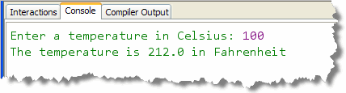
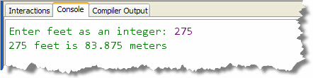

Your next programming exam involves IPO (input-processing-output) style programs. Let's get started with a few simple examples.
Celsius To Fahrenheit
Our first program reads a Celsius degree in double from the
console, then converts it to Fahrenheit and displays the result.
The formula for the conversion is:
Here's what the CelsiusToFahrenheit program should look like:

Inside your program'smain() method, here are the basic
steps you should follow:
- Create a
Scannerobject for input. Remember you'll have toimportthe package that contains the class. - Prompt the user for input. You can see from the screenshot what the prompt should say. Remember that you don't want a newline at the end of the prompt.
- Read the user's input and store it in a
doublevariable. - Convert the input to fahrenheit using the formula
above. Store the answer in a second
doublevariable. - Combine the calculated output with the appropriate verbiage and display it. You can see the output on the screenshot.
Remember that algebraic formulas often are written using integers
or fractions, but actually expect real-number results. For
instance, in the formula for this problem, you need to
multiply the Celsius value by 9/5, but if you transcribe the
formula literally, you'll get integer division, which always
returns the value 1. Instead you need to use double
values in your calculation.
Once you have created the program, compile it and then CodeCheck your results. Keep trying until you get a perfect score.
Feet To Meters
Write a program that reads a number in feet, (input by the user), and then converts it to meters and displays the result. Use a named constant to representMETERS_PER_FOOT. The value
you should use for your constant is: 0.305. (This will
ensure that everyone's calcuations come out the same.)
Here's what the FeetToMeters program should look like:
Follow the same steps and basic structure as you did for the CelsiusToFahrenheit.Once you have created the program, compile it and then CodeCheck your results. Keep trying until you get a perfect score.